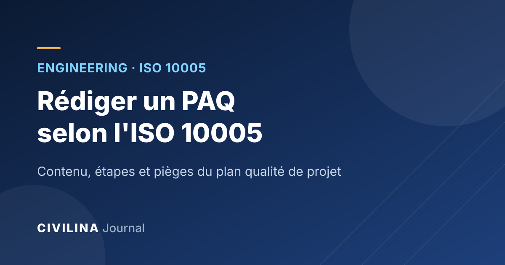

Accueil › Journal › Rédiger un PAQ selon l'ISO 10005
Engineering · ISO 10005Rédiger un Plan d'Assurance Qualité (PAQ) selon l'ISO 10005

« Merci de nous transmettre votre PAQ avant le démarrage des prestations. » La demande arrive souvent juste après la signature du marché, et le document est alors rédigé dans l'urgence, à partir d'un modèle d'un autre projet. Pourtant, un PAQ bien construit est l'un des outils les plus utiles d'un projet. Voici comment le rédiger en s'appuyant sur les lignes directrices de l'ISO 10005.
Qu'est-ce qu'un PAQ ?
Le Plan d'Assurance Qualité, que l'ISO appelle simplement plan qualité, est le document qui précise, pour un objet donné, quelles actions, quelles responsabilités et quelles ressources seront mises en œuvre pour en garantir la qualité. Cet objet peut être un projet, un contrat, une mission d'études, un ouvrage ou un produit.
Sa force tient à ce mot : donné. Le PAQ ne décrit pas l'entreprise en général ; il décrit comment l'entreprise va s'organiser pour ce projet-là, avec ses exigences contractuelles, ses intervenants, ses risques et son planning.
L'ISO 10005 fournit des lignes directrices pour établir, revoir, accepter, appliquer et réviser un plan qualité. Comme l'ISO 10006, ce n'est pas une norme certifiable : c'est un guide, utilisable que l'entreprise soit certifiée ISO 9001 ou non.
PAQ, manuel qualité et ITP : ne pas confondre
| Document | Périmètre | Question à laquelle il répond |
|---|---|---|
| Manuel ou système qualité | Toute l'entreprise, durablement | Comment fonctionnons-nous en général ? |
| PAQ | Un projet ou un contrat | Comment allons-nous assurer la qualité sur ce projet ? |
| ITP | Un ouvrage ou un lot de travaux | Quels contrôles, quand, par qui, avec quel critère et quelle preuve ? |
| Procédures et modes opératoires | Une activité précise | Comment réaliser cette tâche correctement ? |
Le PAQ fait le lien entre ces niveaux : il renvoie aux procédures existantes de l'entreprise plutôt que de les recopier, et il annonce les ITP qui détailleront les contrôles ouvrage par ouvrage.
Quand le PAQ est-il demandé ?
Le PAQ est généralement exigé par le marché, dans le cahier des charges ou les clauses administratives. Selon les projets, on rencontre trois moments :
- À l'offre : certains marchés demandent un document d'organisation qualité simplifié, parfois appelé schéma organisationnel du PAQ (SOPAQ), qui montre comment le candidat compte s'organiser. Il pèse alors dans la note technique.
- Avant le démarrage : le PAQ complet est remis au maître d'ouvrage ou au maître d'œuvre, qui le revoit et l'accepte, parfois après observations.
- Pendant le projet : le PAQ est révisé lorsque l'organisation, le périmètre ou les intervenants changent.
Même lorsque le client ne l'exige pas, un PAQ court reste utile sur tout projet comportant plusieurs intervenants ou des exigences techniques importantes.
Le contenu type d'un PAQ
L'ISO 10005 propose une liste de rubriques à adapter au projet. Toutes ne sont pas nécessaires partout : un plan qualité doit rester proportionné. Voici les rubriques les plus courantes et ce qu'il faut y écrire.
| Rubrique | Ce qu'on y écrit concrètement |
|---|---|
| Objet et domaine d'application | Le projet, les prestations couvertes, les exclusions |
| Éléments d'entrée | Pièces du marché, exigences du client, réglementation, normes applicables |
| Objectifs qualité | Quelques objectifs mesurables propres au projet |
| Organisation et responsabilités | Organigramme, rôles, délégations, matrice RACI |
| Maîtrise des documents | Codification, circuit de vérification et d'approbation, indices, diffusion, archivage |
| Ressources | Personnel clé et compétences, moyens, logiciels, laboratoires |
| Communication | Interlocuteurs, réunions, comptes rendus, traitement des demandes du client |
| Conception et études | Données d'entrée, revues, vérifications, validations, gestion des modifications |
| Achats et sous-traitance | Sélection, exigences transmises, contrôle des prestations externes |
| Réalisation | Méthodes, procédures d'exécution, ITP |
| Identification et traçabilité | Comment retrouver l'origine d'un matériau, d'un document, d'une décision |
| Non-conformités | Détection, enregistrement, traitement, décision, recontrôle |
| Surveillance et mesure | Contrôles, essais, indicateurs suivis |
| Audits | Audits internes ou du client prévus sur le projet |
Les cinq étapes de rédaction
- Rassembler les éléments d'entrée. Relire le marché, le cahier des charges, les plans, les exigences qualité du client et la liste des normes applicables. Noter chaque exigence qui concerne la qualité.
- Rédiger en partant du projet, pas du modèle. Un modèle donne la structure ; le contenu vient du projet : ses intervenants, ses risques, ses ouvrages, ses délais.
- Faire revoir en interne. Le chef de projet et les responsables techniques vérifient que le PAQ décrit ce qui sera réellement fait. Un PAQ que l'équipe ne reconnaît pas ne sera pas appliqué.
- Soumettre et faire accepter. Le client ou son représentant revoit le document ; ses observations sont traitées et tracées dans une nouvelle révision.
- Appliquer, vérifier et réviser. Le PAQ est présenté aux équipes au démarrage, suivi pendant le projet, et mis à jour à chaque changement significatif.
Faire vivre le PAQ pendant le projet
Un PAQ accepté puis rangé dans un classeur n'a servi qu'à satisfaire une clause du marché. Pour qu'il devienne un outil de pilotage, trois habitudes suffisent.
Fixer des objectifs qualité vérifiables. Ils doivent être propres au projet et mesurables, par exemple : toutes les notes de calcul vérifiées avant diffusion ; aucune observation du contrôleur technique laissée sans réponse au-delà du délai convenu ; chaque non-conformité clôturée avec un recontrôle documenté. Ce sont des engagements d'organisation, que l'équipe peut suivre et prouver.
Suivre le PAQ en réunion. Un point qualité de quelques minutes dans la réunion de projet permet de regarder les non-conformités ouvertes, les documents en attente de visa et les écarts par rapport aux objectifs.
Réviser au bon moment. Un changement de responsable, l'arrivée d'un sous-traitant, une extension du périmètre ou une nouvelle exigence du client justifient une nouvelle révision. Le tableau des révisions, en tête du document, en garde la trace.
Les spécificités d'un PAQ de bureau d'études
Pour un bureau d'études, le « produit » est un ensemble de documents : notes de calcul, plans, spécifications, rapports. Le PAQ doit donc insister sur la maîtrise des études. Cinq points méritent une attention particulière :
- Les données d'entrée et hypothèses : elles sont listées, datées et validées avant de lancer les calculs. Une hypothèse qui change doit déclencher une revue.
- La vérification indépendante : chaque note de calcul est vérifiée par une autre personne que son auteur, et la vérification est tracée.
- Les logiciels de calcul : version utilisée, conditions d'emploi, et cohérence des résultats contrôlée par des calculs simplifiés ou des ordres de grandeur.
- Le circuit de diffusion et de visa : qui émet, qui vérifie, qui approuve, et comment les observations du client ou du contrôleur sont traitées.
- La gestion des révisions : chaque indice indique ce qui a changé et pourquoi, pour que le chantier sache toujours quelle version appliquer.
Les erreurs fréquentes
- Reprendre le PAQ d'un autre projet en changeant seulement le nom du client.
- Recopier le manuel qualité de l'entreprise au lieu d'y renvoyer.
- Nommer des responsables qui ne travailleront pas sur le projet.
- Promettre des contrôles que l'organisation ne pourra pas tenir.
- Ne jamais présenter le PAQ aux équipes qui doivent l'appliquer.
- Laisser le PAQ inchangé alors que l'organisation du projet a évolué.
Checklist avant envoi
- Le domaine d'application et les exclusions sont explicites.
- Toutes les exigences qualité du marché sont reprises ou traitées.
- L'organigramme et la matrice RACI correspondent aux personnes réellement affectées.
- Le circuit des documents (émission, vérification, approbation, diffusion) est décrit.
- Les procédures existantes sont citées par leur référence, pas recopiées.
- Les ITP prévus sont listés, avec leur calendrier de remise.
- Le traitement des non-conformités est défini, avec les responsables.
- Le document porte un indice, une date, un rédacteur, un vérificateur et un approbateur.
Un PAQ réussi n'est pas celui qui obtient le meilleur commentaire du client ; c'est celui que l'équipe ouvre encore à la moitié du projet pour savoir comment faire.
- ISO 10005 — Management de la qualité — Lignes directrices pour les plans qualité.
- ISO 10006 — Management de la qualité — Lignes directrices pour le management de la qualité dans les projets.
- ISO 9001 — Systèmes de management de la qualité — Exigences.
Consultez l'édition en vigueur des normes auprès de leur éditeur officiel, ainsi que les exigences propres à votre marché. Cet article présente une méthode ; il ne reproduit pas le texte des normes.

Ingénieur civil et PMP, fondateur de Civilina. Expérience en management de projet, qualité, QHSE et coordination opérationnelle, en Algérie et à l'international.
Un PAQ à remettre pour votre prochain marché ?
CIVILINA Engineering rédige avec vous un PAQ adapté à votre projet, avec la matrice RACI, les procédures associées et la liste des ITP.
Découvrir CIVILINA Engineering →